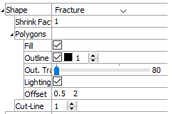
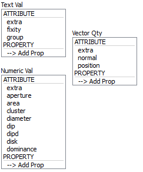
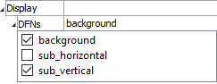
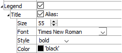

裂隙绘图项
说明
按属性或特性着色的裂隙。
此绘图项遵循形状/按…着色/颜色选项（Shape/Color By/Color Opt）模式来确定其渲染方式。
属性
形状

指定绘图项在渲染时采用的形状。若选择“最小范围”、“容差范围”或“单元范围”之一，则该项渲染为与所选范围大小相对应的立方体。主 形状 属性也是以下所列附加控制项的容器。
收缩系数：按所提供值的倍数缩放对象；1 = 原始大小，.5 = 50%，2 = 200%，等等。
多边形：用于控制多边形渲染方式的设置容器。展开此控件可看到如下附加设置。
填充：勾选时渲染绘图项的填充。若取消勾选，则仅渲染线框。
轮廓：设置是否显示对象轮廓，并附有用于控制轮廓颜色和宽度的附加设置。
轮廓透明度：设置轮廓透明度（0 = 完全不透明；100 = 不可见）。
光照：设置是否使用位于观察者右肩上方的光源来渲染该项；这会使该项中离光源较近的部分比远离光源的部分显得更亮。
偏移：设置 OpenGL 多边形偏移的参数；如果多边形渲染效果不佳，将这些值设置得接近零可能会改善效果（第一个值是一个因子，指定用于为每个多边形创建可变深度偏移的比例因子，第二个值用于创建恒定的深度偏移）。
切割线：设置表示切面位置的线的粗细。
按…着色

指定要渲染该项目的哪一方面，可从三个互斥分组中选择（同一时间每个分组中只有一项选择处于活动状态）：文本值、数值和矢量量。若选择了 矢量量，则会新增一个字段，用于指定渲染矢量的是某个分量（\(x\)、\(y\) 或 \(z\)）还是其大小（mag）。
在选择器底部选择 -->Add Prop 将弹出一个对话框，用户可在其中指定要添加到列表中的新特性（并使其成为活动的 按…着色 选择）。
选择器上的 ATTRIBUTE 和 PROPERTY 字样不起任何作用；提供它们只是为了在视觉上区分这两个分组。
| extra | 按 extra 变量着色。选中后，会额外提供一个字段，用于按索引标识该变量。 |
| 固定 | 按固定条件着色。 |
| 分组 | 按分组着色。额外提供一个字段，用于指定槽位索引。默认设置为 任意（它占据微调框上的索引位置 0）。 |
| extra | 按 extra 变量着色。选中后，会额外提供一个字段，用于按索引标识该变量。 |
| aperture | |
| 面积 | |
| cluster | |
| diameter | |
| 倾角 | |
| dipd | |
| 圆盘 | |
| 优势度 |
| extra | 按 extra 变量着色。选中后，会额外提供一个字段，用于按索引标识该变量。 |
| normal | |
| position |
颜色选项
指定绘图项的着色选项。此项必须设为 scaled（等值线）着色，或基于 named 项目项的着色（例如分组名称）。前者是通过 按…着色 属性设置的数值或矢量项目的默认选项；后者是指定文本值时 按…着色 的默认设置。对文本值将 ColorOpt 设为“scaled”将导致不渲染任何内容。将数值或矢量量设为“named”会使数值范围内的值被视为各自独立的“名称”来着色，名称的数量由“max-names”子属性控制。
缩放

选择 scaled 时，着色由以下子属性控制。
等值线：用于控制等值线绘制选项的设置容器。
色带：设置用于渲染的颜色色带。五个选项按选择框中的显示顺序依次为：彩虹（蓝到红）、灰度、蓝-白-红、蓝-青-白-黄-红、绿-白-红。
最大值：自动（勾选 自动）或使用指定值（取消勾选 自动）设置颜色色带的最高值（右端）。高于 最大值 的值将用 高于 颜色填充。
最小值：自动（勾选 自动）或使用指定值（取消勾选 自动）设置颜色色带的最低值（左端）。低于 最小值 的值将用 低于 颜色填充。
间隔数：指定渲染时使用的颜色间隔数量；如果勾选 自动，此值默认为 8-16 之间的某个数字。
对数刻度：勾选后指定颜色间隔按对数间隔分布。
反转：勾选时反转颜色色带的颜色顺序。
低于：指定用于低于 最小值 的值的颜色。勾选 自动 时使用颜色色带的左端颜色。取消勾选时，由色板控件指定颜色。
高于：指定用于高于 最大值 的值的颜色。勾选 自动 时使用颜色色带的右端颜色。取消勾选时，由色板控件指定颜色。
命名

选择 named 时，着色由以下子属性控制。
最大名称数：指定要使用的最大名称数，以及相应的唯一颜色最大数量。若存在的唯一名称更多，则这些名称被赋予名称 unknown，并用单一颜色着色。默认值为 30。
名称控件：指定是否存在名称或颜色控件。当存在大量唯一名称（或颜色）时，为每种颜色提供控件会大幅降低渲染性能。取消勾选此选项后，可以高效地渲染大量唯一颜色。
颜色列表：若绘图项包含可选择的颜色项，则编辑框/微调框可用于指定渲染该项时要使用的颜色数量。此外，相邻按钮（全选、全不选、反选）将处于活动状态。若绘图项不包含可选择的颜色项，则这些控制项被禁用。在任何情况下，若存在颜色（颜色数 > 0），都可以展开此子属性以显示用于渲染绘图项的颜色列表。列表中的颜色块可用于更改所选位置的颜色。颜色块旁边的文本标签可编辑。若存在可选择的颜色项，列表中的每个颜色项都会以复选框开头，可用于显示（勾选）或隐藏（取消勾选）该项。
显示

为各个不同的集合设置显示的关闭/开启。
显示（项目名称上的复选框）：勾选列表中的某一项可将其包含在显示中。取消勾选该项则将其隐藏。
映射

将该项映射到新的模型坐标。详情请参见标准的 映射（map） 控件说明。
透明度

设置绘图项的透明度。详情请参见标准的 透明度（transparency） 控件说明。
图例

设置绘图图例中该项目的标签。详情请参见标准的 图例（legend） 控件说明。
在 标题 下方，裂隙 绘图项还在图例中提供用于 计数、命名 和 缩放 的控制项。
| 这些内容对您有帮助吗？… | FLAC3D © 2019, Itasca | 原文更新于 2020 年 10 月 8 日 |